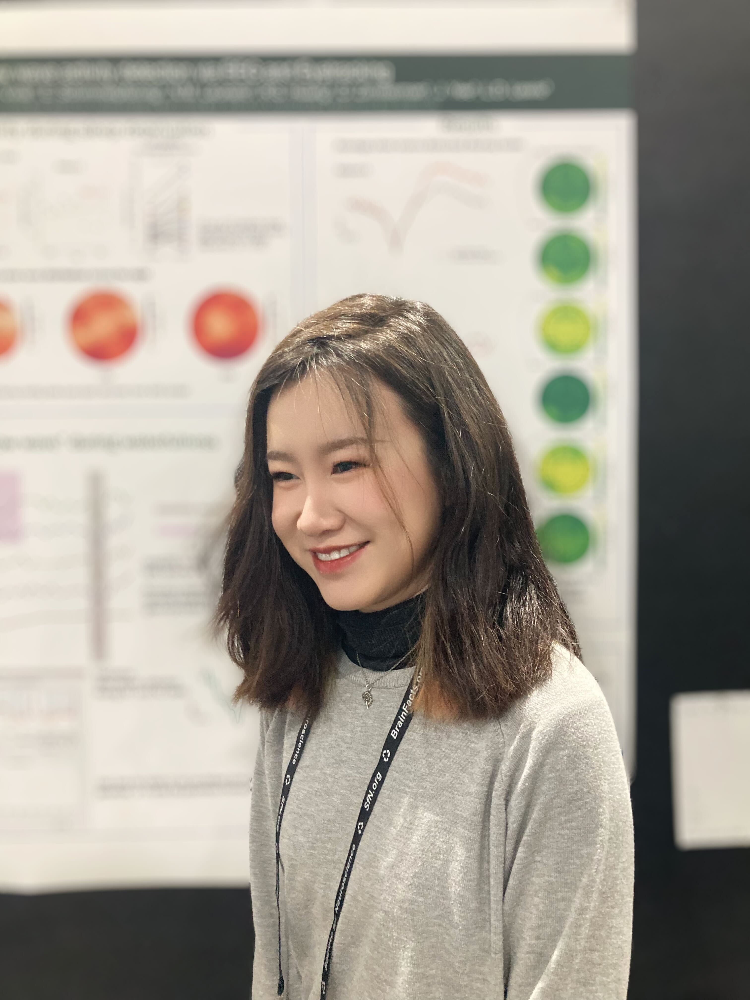

I am a computational neuroscience researcher at Lewis Lab where I investigates brain dynamics across different attentional states.
I obtained my PhD studying computational neuroscience at Boston University and MIT, where I was advised by Dr. Laura D. Lewis.
By leveraging multimodal imaging techniques, including simultaneous fast fMRI and EEG, I aim to integrate neural and physiological measurements to develop biologically
interpretable computational models that capture both local and global changes in brain dynamics.
Prior to joining MIT, I graduated from UC San Diego with a B.S. in Cognitive Science with a specialization in Neuroscience. During my undergrad years I was fortunate to work with Dr. Timothy Brady, and Dr. Jaime A. Pineda, and Dr. Virginia de Sa,.
Prior to joining MIT, I graduated from UC San Diego with a B.S. in Cognitive Science with a specialization in Neuroscience. During my undergrad years I was fortunate to work with Dr. Timothy Brady, and Dr. Jaime A. Pineda, and Dr. Virginia de Sa,.
2025
Nature Neuroscience, 2025(accepted)
Preprint |

European Conference on Computer Vision (ECCV), 2024
Paper | Project page

PLOS Biology, 2024
Paper | Project page | Repository | MIT news

eLife, 2024
Paper

Human Factors in Healthcare, 2024
Patent Pending
Paper | Repository
2023

eLife, 2023
Paper
2022

Cognitive Neuropsychology, 2022
Paper | Project page | Fusion video
2021

arXiv, 2021
Paper | Project page
-
A Systematic Comparison of fMRI-to-video Reconstruction Techniques.
Camilo Fosco*, Benjamin Lahner*, Bowen Pan, Alex Andonian, Emilie Josephs, Alex Lascelles, and Aude Oliva.
International Conference on Machine Learning (ICML), Vienna, Austria (2024) -
A mechanical device for precise self-administration of ocular drugs.
Jesse George-Akpenyi*, Benjamin Lahner*, Seung Hyeon Shim*, Carly Smith*, Nakul Singh, Matt Murphy, Leroy Sibanda, Giovanni Traverso, and Nevan C. Hanumara.
Human Factors and Ergonomics Society Student Conference, Cambridge, MA (2024) (oral) -
The Emergence of Early Sound Categorical Responses in the Human Brain.
Benjamin Lahner, Santani Teng, Matthew X. Lowe, Ian Charest, Aude Oliva, Yalda Mohsenzadeh.
NeurIPS SVRHM Workshop, Vancouver, Canada (2019)
-
Education Volunteer, The Educational Justice Institute (TEJI) at MIT
I teach MIT computer programming courses to inmates. They learn foundational computer skills that will be essential in their day-to-day lives, continued education, or even careers in tech.
See the Fundamentals of Neural Networks tutorial I developed with this population in mind. -
Mentor, Project Short
I mentor one prospective graduate student per application cycle through the graduate school application process. I assist with SOPs, mock interviews, networking, and any general advice.
-
MIT Open Data Competition - Honorable Mention (2022)
The competition highlights open and publicly accessible data with a large potential for scientific impact. My submission of our large-scale fMRI dataset of video event understanding (Algonauts 2021, see above) won runner up against over 70 submissions across all of MIT. -
EECS MathWorks Fellowship (2022)
Full graduate student financial support for an academic year awarded to select MIT EECS graduate students using MATLAB to further novel and impactful scientific research. -
Best Biomedical Engineering Senior Design Project (2019)
Awarded best biomedical engineering senior design project out of 42 other projects by Boston University engineering faculty. The project delivered a low-latency (~20ms) algorithm to manipulate a mouse's neural signals in real-time. This project resulted in a publication in eLife.


{kind=link}